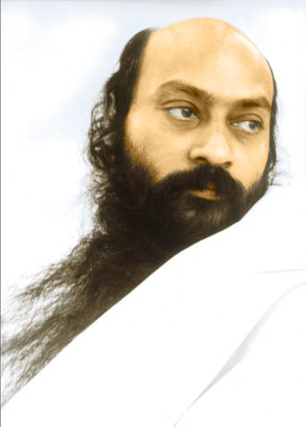

道之門
譯者序
在心理分析跟哲學的領域�堨景u了十幾年，我發現只有智性的瞭解雖然也能有益於身心，但是終究有其潛在的、不能突破的界限，單單靠理智的力量想要超越原有的自我實在很難。
剛好，在赴美求學期間，我碰到一位經濟學老師，阿南德．雪倫（AnandSalam），他是本書作者奧修大師的門徒。我認為雪倫是我從小學、中學、大學到研究所所碰到的所有老師�堶掖怞n的一個，他頭腦清晰，教學極富啟發性，從他那�堙A我認識了奧修，他使我的人生觀產生了很大的改變，當時我跟朋友講，如果有人要我在我的碩士學位和認識奧修這兩件事情上只選擇一樣，我一定會選擇放棄我的學位而認識奧修。
奧修的著作逾三百本，都是他直接用英文講道，由門徒所記錄下來的。他講道的範圍包括佛陀、耶穌、老子、莊子，也包括禪學和密宗，事實上他無所不包，他在西元一九三一年生於印度，二十一歲的時候成道。
剛開始看奧修的書，我有一半反對，但是能夠接受的另外一半卻覺得非常非常好，看完一本書之後，我變得幾乎可以全部接受他的思想，另外有一部分，我只能說我不知道，我沒有足夠的能力去判斷，但是我已經非常信任他，讀了他的書，使我深深覺得以前那種無知的驕傲實在是不成熟。
讀了三十本奧修的書之後，我決定將它譯成中文，介紹給中文的讀者。
唐三藏費了九牛二虎之力到西天取經，如今這些寶貴的經文經由二十世紀成道的精神大師用非常清晰的口吻講出來，的確是深入淺出，我不擬吹噓他話語的睿智，因為他深奧的智慧非我凡平所能形容，你最好直接看他的書，自己去體會。
由於這是我有生以來所翻譯的第一本書，雖然我盡力保持作者的原意，但難免有不足之處，您如果有什麼疑問，敬請不吝來函措教。其實能夠的話，我希望你直接看他的原文，一定更傳神，原文是口語化的英文，並不困難。閒話少說，我們就開始慢慢來品嘗他的話語……
| 謙達那 |
| 一九八七年於臺北 |
再版序
獻給有緣人
當我執筆寫這本書再版序的時候，距離本書當初出版已有三年的時間，在這三年之內有非常大的變化，最大的變化就是本書作者奧修大師的圓寂。奧修大師曾經預言，在他圓寂之後，他的書一定會更加暢銷，事實上，奧修的智慧之語是無時間性的，就好象古代的經文能夠萬古流芳一樣。
另外，去年本人也曾經赴印度孟買附近的普那參訪奧修大師的社區，聆聽大師的講道，以及參加他們的靜心活動，奧修大師的影響永遠活在我們的心中。外在的提升固然有它的作用，尤其當它能夠輔助內在成長的時候，然而內在的蛻變才是我們人生真正的目的。
在這三年之內，本人仍繼續潛心于翻譯奧修大師的其他著作，目前已出版者共有五本，預計在今年之內尚會陸陸續續出版幾本。（按：現已出版十九本譯著。）
奧修大師原來以巴關．羅傑尼希問世，但是後來他叫門徒將他的名字改成奧修（OSHO），奧修其實是日本語「和尚」的音譯，關於這個名詞的第一次出現是愛卡（Eka）用於稱呼他的師父菩提建庫（Bodhidharma）。「和」意味著「帶著很大的尊敬、愛和感激」，它同時意味著「同步發生」和「和諧」，「尚」意味著「意識的多層面擴張」和「存在從所有的方向灑過來」
謙達那
一九九0年三月於臺北
原序
我非常喜愛我曾經讀過的奧修的第一本書，喜愛到我幾乎不能讀它，我讀了一段、一句，就起來跳舞，我簡直不能相信，在奧修的話�埵釦痟蕈g相信過的所有東西，有我曾經懷疑過的所有東西，全部都很明白、很詩意、很清晰地表達出來，我所能夠說的只是：「是的！」是的，而且感謝你上千個感謝。
那是一個強烈的羅曼史的開始，一個隨著年代而加深的羅曼史。奧修解釋說，一個師父和門徒之間的關係是一種深深的愛和深深的信任關係。在我五年前第一次讀那本小冊子的時候，一個繼續在滋長的愛的基礎就發展出來了，隔了不久，儘管我有心理障礙，儘管我有拒斥宗教的強烈傾向，儘管我對靜心（meditation）漠不關心、對整個師父與門徒的這種關係方式心存懷疑，甚至是嘲弄，我最後還是成為奧修的門徒。點化（initiation）為門徒是一種技巧，就象他所設計出來的靜心方法也是技巧一樣，他的話還有他的書本身也都是技巧。奧修用盡所有方法把我們從我們現在所在的地方帶領到我們所能達到的地方，他玩一些把戲來騙我們、來吸引我們、來引誘我們去蛻變（transform），他以一種非常溫暖，非常有愛心的方式來做，所以即使碰到那種不可避免的隨著成長而來的痛苦，一個人所能夠說的也只是：「是的，而且感謝你，一千個感謝。」
在這本書�堶惟狴]含的演講是一九七一年春天所講的，奧修廣泛地討論他如何跟他的門徒一起修行，他不僅談到關於他所使用的技巧，和那些技巧背後所隱藏的奧秘的意義，他還用他的話語作為技巧把你推到頭腦和理智之外，他解釋道：「唯有當你被說服說我所帶的是理性的，那麼我才能夠開始在非理性的部分下功夫，那才是真正的開始，也是我必須逐漸進入你的心，我必須左彎右拐，繞過你的理智。」
他從理智開始，為的是要把一個人帶出理智，當一個人被他的話所說服的時候，他就用他的話來粉碎一個人的信念。他告訴我們說，佛陀曾經告訴他的門徒舍利子一些荒謬的事情，為的只是要看看舍利子是否提出質疑，為的只是要試一試他是否已經臣服。奧修似乎也在做同樣的事。如果你是佛陀、基督、戈齊福、或克利虛納姆提的跟隨者，奧修會說一些令你完全無法接受的事情，如果你是一個猶太人，他會說一些令你無法接受的關於希特勒的事情，所有這些都是技巧，所有這些都是要創造出一個情境，使你被迫去面對你自己的偏見、你自己的盲點、和你自己的投射。
如果師父給你一些東西，人的頭腦一般都會提出質疑。唯有當你不提出質疑，師父才會給你一些不能問的東西，奧修的話有時候是用來試探的，看看你是否會提出質疑。他所給的點化（成為門徒）的外在顯示也是用來試驗你的，他要求門徒要穿紅色系的衣服，以及在頸項掛著一條串珠，上面附有裝著他照片的小匣子，這具有很多奧秘的理由，這些理由在這本書�堶惘雩挭嚏A但似乎同樣重要的是：它是一種臣服（surrender）的表示、是一種信任的表示，唯有當你信任，師父才能夠在你身上下功夫。
在本書�堶情A奧修解釋一個二十世紀的成道大師-----一個佛，一個基督，一個老子----如何在他的門徒身上下功夫，他用各種方法來改變他們，那些方法就象奧修的智慧一樣，是沒有時間性的，也象他如詩一般的演講一樣，是新的。
希望他的話語能夠使你的心開始跳舞，就象它已經使我們千千萬萬人的心跳起舞來一樣，希望他的話語能夠刺激你、激勵你、混亂你、啟發你，而且縈繞著你，然後你就可以丟棄它們，似乎唯有到那個時候，真正的工作才能夠開始。
女門徒：沙特亞．巴提
目錄
| 第一章 神就是那正在發生的 |
 |
| 第二章 門徒：透過人格的成長而放棄幼稚的行為或欲望 | |
| 第三章 成為門徒：走出輪回 | |
| 第四章 與神性親近 | |
| 第五章 靜心：一種微妙的死亡 | |
| 第六章 心靈上的爆發：創造新的東西 | |
| 第七章 成為門徒的神秘意義 | |
| 第八章 奧秘集團：保持者和媒介者 | |
| 附 錄 開悟——一個團體性的工作 |